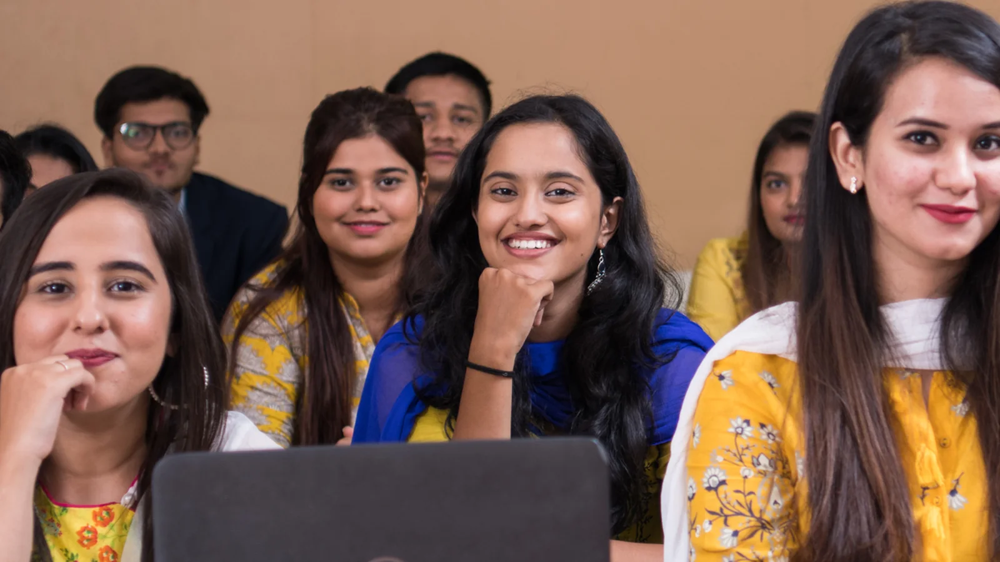

Dr. Abhijit Nair
Associate Professor & Dean

The curriculum spans an array of disciplines, from literature and philosophy to fim-making, media and communication, sociology, and the fine arts.
What stands apart is that the school hosts a unique department for peace, that explores both traditional and contemporary peacebuilding approaches in today's conflict-ridden world.
Associate Professor & Dean
Dadasaheb Phalke International Film Institute is established with the aim of training young India into building promising careers in the highest-grossing industries - Cinema, OTT, Digital Media, among others.…
The Department of Education at MIT-WPU School of Education, MIT-WPU, is dedicated to moulding students into conscientious, mindful, and empathetic educators for the future. The forward-looking curriculum of…
The Department of Liberal Arts at MIT-WPU stands proudly among the top 100 institutes for Liberal Arts in India. Offering a diverse array of undergraduate and postgraduate degree programmes encompassing varied…
The Department of Media and Communication at MIT-WPU stands as a premier institution for media studies and journalism in the country. Offering both undergraduate and postgraduate programmes, the department…
The Department of Peace Studies at the MIT World Peace University, guided by UNESCO Chair Dr. Vishwanath Karad, offers a comprehensive and interdisciplinary programme that focuses on promoting, understanding,…
The Department of Photography at MIT-WPU is committed to fostering excellence in photography with a strong emphasis on integrity and ethics. These programmes are curated and designed by experts, integrating…
The School of Consciousness studies consciousness through interdisciplinary research.